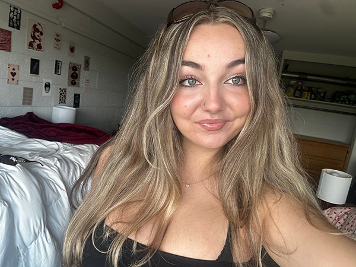

Welcome to Guide to Gazing! A website focused on making stargazing easier to understand and explore. We have lots of information about stargazing here, including where to observe the night sky, what kinds of objects you can see, and what tools can help you identify them.
The site is organized into clear sections so the information is easy to navigate. Each page focuses on a specific part of stargazing and uses a mix of text, images, and tables to help explain and compare ideas in a simple way.
Overall, the goal of our website is to present stargazing in a way that feels organized and easy to follow, and most importantly, fun!

Role: Founder [&] Site Editor
I created Guide to Gazing as a way to share one of my favorite hobbies with other people. I’m responsible for designing the site, organizing the content, and making sure everything is easy to follow. I’m especially interested in making astronomy feel less overwhelming for beginners and turning it into something people can actually enjoy getting into.
Role: Photographer
Kelly focuses on capturing images of the night sky to support the content on the site. Her photos help show what different celestial objects actually look like and make everything feel a bit more real and less abstract. She also helps choose which visuals work best for each section.
Role: Research & Content
Jane handles most of the background research for the site. She looks into different astronomical objects, tools, and observation tips, and helps turn that information into explanations that are easier to understand. She makes sure everything is accurate but still beginner-friendly.
Role: Design & Layout
Ryan works on how the site looks and feels overall. He focuses on layout, spacing, and making sure everything is easy to navigate. He also helps with interactive parts of the site, like maps and visual elements, to make the experience a bit more engaging.
Guide to Gazing started as a small idea and slowly turned into a full site over time. Here’s a quick look at how it came together: